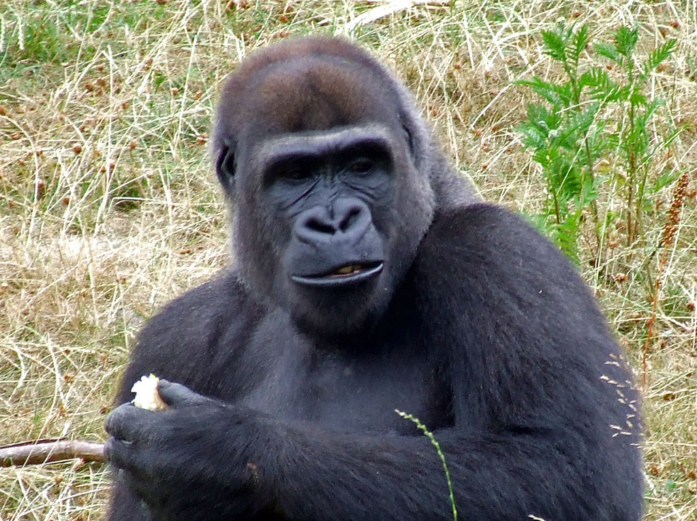
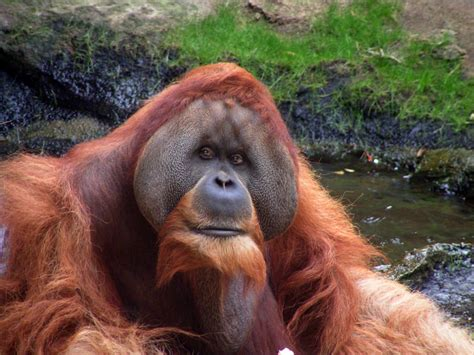
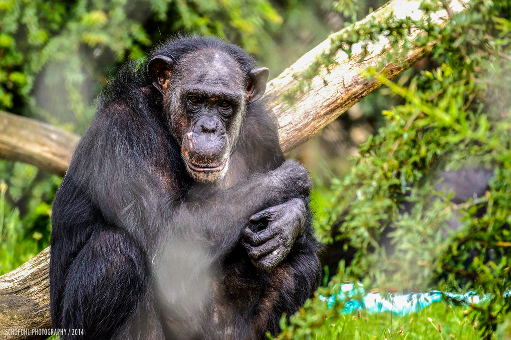

Gorilla
Die Gorillas (Gorilla) sind eine Primatengattung aus der Familie der Menschenaffen (Hominidae). Sie sind die größten lebenden Primaten und die ausgeprägtesten Blätterfresser unter den Menschenaffen. Sie sind durch ihr schwarzgraues Fell und den stämmigen Körperbau charakterisiert und leben in den mittleren Teilen Afrikas. Wurden früher alle Tiere zu einer Art zusammengefasst, so unterscheiden jüngere Systematiken zwei Arten mit jeweils zwei Unterarten: den Westlichen Gorilla (G. gorilla), der in den Westlichen Flachlandgorilla (G. g. gorilla) und den Cross-River-Gorilla (G. g. diehli) aufgeteilt wird, und den Östlichen Gorilla (G. beringei), bei dem zwischen dem Östlichen Flachlandgorilla (G. b. graueri) und dem Berggorilla (G. b. beringei) unterschieden wird.


Orang-Utan
Die Orang-Utans (Pongo) sind eine Primatengattung aus der Familie der Menschenaffen (Hominidae). Von den anderen Menschenaffen unterscheiden sie sich durch ihr rotbraunes Fell und durch ihren stärker an eine baumbewohnende Lebensweise angepassten Körperbau. Sie leben auf den südostasiatischen Inseln Sumatra und Borneo; die Bestände beider Inseln werden heute als drei getrennte Arten geführt: Borneo-Orang-Utan (Pongo pygmaeus), Sumatra-Orang-Utan (Pongo abelii) und der Tapanuli-Orang-Utan (Pongo tapanuliensis).
Menschenaffe
Zu den Menschenaffen gehören ferner die fossilen Vorfahren der acht rezenten Arten sowie deren fossile Verwandte, die keine direkten Vorfahren sind, wie etwa Gigantopithecus und der Neandertaler.
Nur aufgrund der Ausbreitung des Menschen (Homo sapiens) aus Afrika sind die heute lebenden Hominiden weltweit verbreitet. Die übrigen Menschenaffen sind auf tropische Regionen in Afrika und Südostasien beschränkt und allesamt in ihrem Bestand gefährdet.
